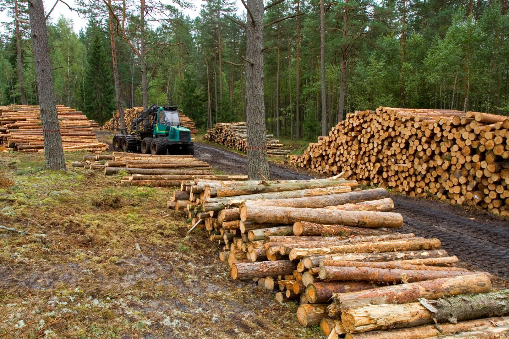
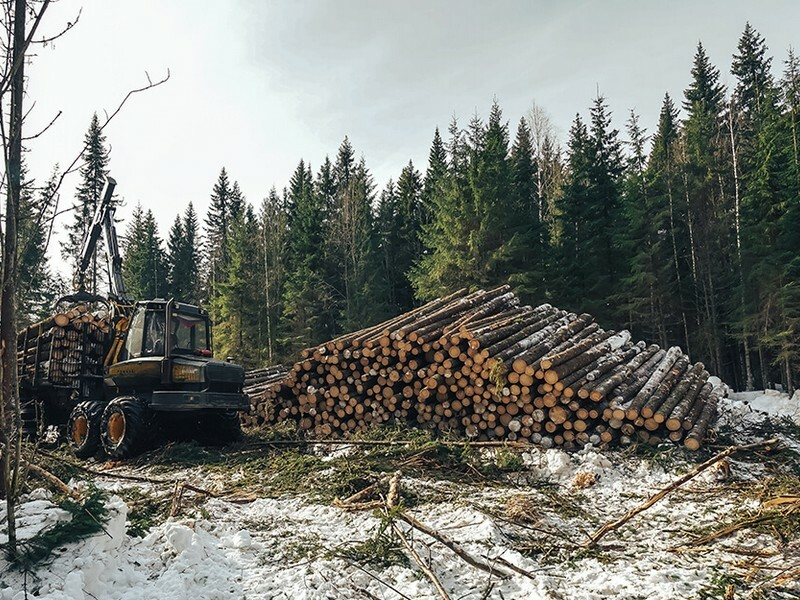

Проектируемые технологии для заготовки древесины при уходе за лесом
Лесоводственная ценность и приемлемость технологий рубок ухода и санитарных рубок в конкретных условиях определяется наличием и параметрами технологической сети (шириной пасек и коридоров); видом заготавливаемого и транспортируемого в пределах пасек сырья; способом изъятия из насаждений нежелательных деревьев. Для проведения рубок ухода и санитарных рубок с применением машин и погрузочных средств осуществляется создание технологической сети, основой которой является система волоков и погрузочных пунктов. Магистральные технологические коридоры закладываются с таким расчётом, чтобы длина пасечных волоков (расстояние трелёвки по ним), как правило, не превышало 250 м. При наличии на территории участка леса густой сети дорог и просек, пригодных для работы техники при рубках ухода и санитарных рубках, технологические коридоры не прорубаются. Ширина технологических коридоров, определяемая расстоянием между стволами ближайших деревьев, ограничивающими коридор с противоположных сторон, устанавливается в соответствии с лесоводственными требованиями и требованиями правил охраны труда. При рубках ухода в молодняках ширина коридоров устанавливается 3 м, при рубках ухода и санитарных рубках в насаждениях старшего возраста – до 4 м. Прорубка более широких коридоров (5 м) должны осуществляться с максимальным использованием промежутков между деревьями, не допуская вырубки деревьев, ведущей к снижению производительности древостоев. Общая площадь технологических коридоров, прорубаемых при проведении проходных рубок, не должна превышать 15 %, выборочных санитарных рубок 5-7 % площади участка леса, при придании им непрямолинейной формы и схематической выборке деревьев при проходных рубках – не более 7-8 % и при выборочных санитарных рубках – 3-5%. В зависимости от возраста насаждений, других таксационных показателей, вида рубок расстояние между пасечными технологическими коридорами устанавливается различным, но кратным определённому расстоянию, принятому за базовое при создании постоянной технологической сети, а также определённым его частям. В качестве такой базы целесообразно принять расстояние в 12–16 метром, которое позволяет достичь преемственности технологических процессов, а также увязку их с технологиями лесосечных работ по заготовке древесины в спелых и перестойных насаждениях. Погрузочные пункты по возможности располагают у дорог и квартальных просек на полянах, прогалинах и других , не покрытых лесной растительностью землях. При этом погрузочные пункты необходимо располагать таким образом, чтобы они дополняли уже существующие в пределах квартала или блока кварталов и могли использоваться при необходимости проведения рубок на соседних участках. Величина погрузочного пункта – не более 0,2 га, общая их площадь на участках до 8 га – не более 0,2 га, 9-15 га – не более 0,3 га, на участках свыше 15 га – не более 2% общей площади. Количество погрузочных пунктов намечается из расчёта один погрузочный пункт на 8-12 га. Во время лесосечных работ на рубках ухода выборочно спиливают деревья, транспортируют их в пределах лесосеки, разделывают на сортименты или измельчают, грузят на транспорт и вывозят, очищают лесосеки. Перечень, последовательность и место проведения работ зависят от вида рубок ухода и характера обработки древесины. Уход в молодняках включает осветления и прочистки в лесных культурах и естественных насаждениях. Технология рубок ухода с заготовкой древесины включает 4 отдельных технологических процесса: с заготовкой деревьев, хлыстов, сортиментов и зелёной щепы. По характеру пространственного размещения подразделяется на узко- (ширина пасек до 25 м), средне- (25 – 30 м) и широкопасечную (50 – 100 м). Широкопасечная технология применяется преимущественно при заготовке сортиментов, для обеспечения более полного соблюдения лесоводственных требований по сохранению лесной среды. Деревья валят ручными мотоинструментами и бензопилами. Среднепасечная технология применяется в основном при прореживаниях и проходных рубках на последних стадиях. Здесь используются те же машины и орудия, что и при широкопасечной технологии. Узкопасечная технология предусматривает полную механизацию работ с использованием лесозаготовительных комплексов. Выбор технологий и технических средств для заготовки древесины сплошными и выборочными рубками определяется их экономической эффективностью в условиях конкретного лесного участка, а также наличием или возможностями приобретения определённого комплекса технических средств для лесозаготовок.
 2 страница 4 страница